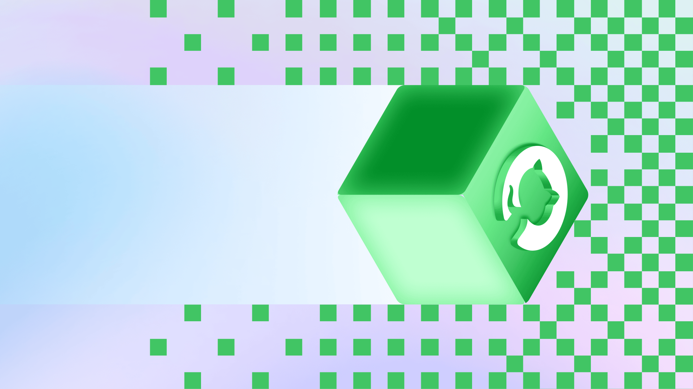
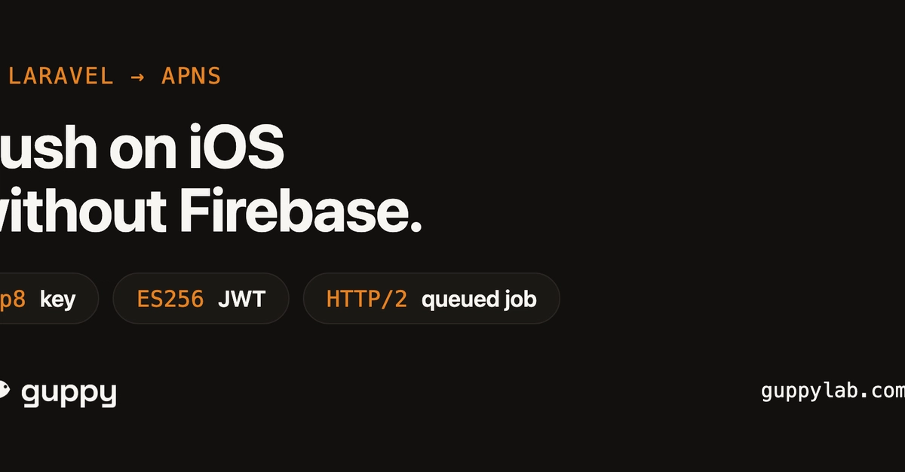
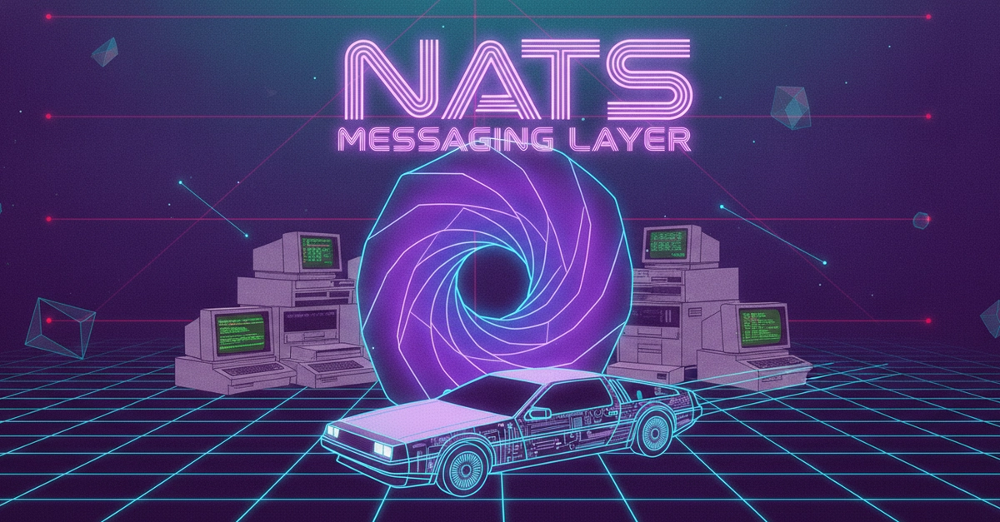
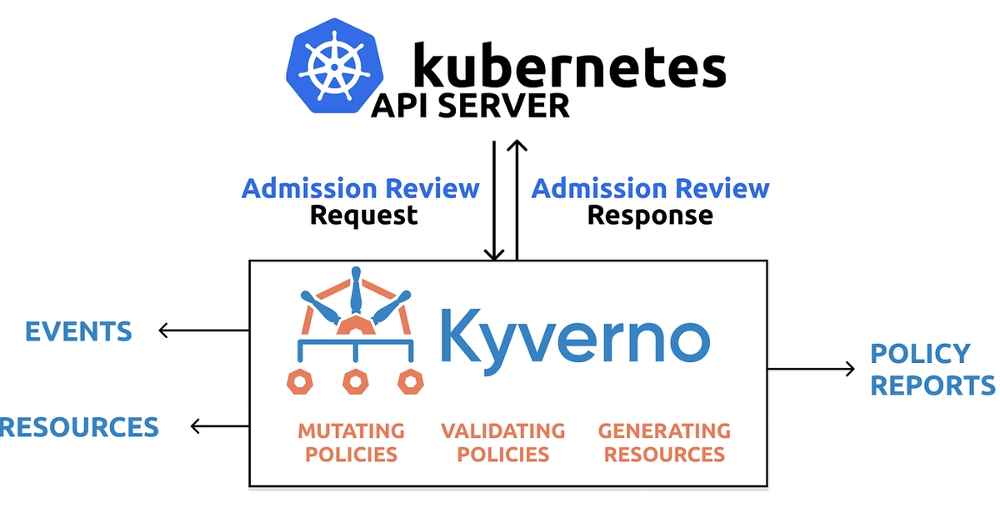
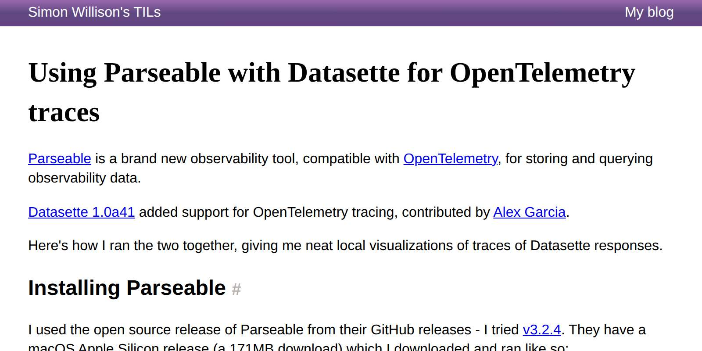
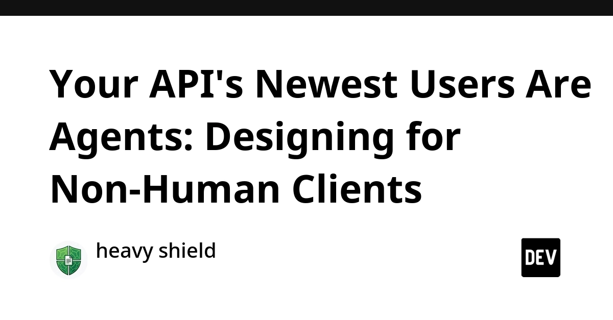
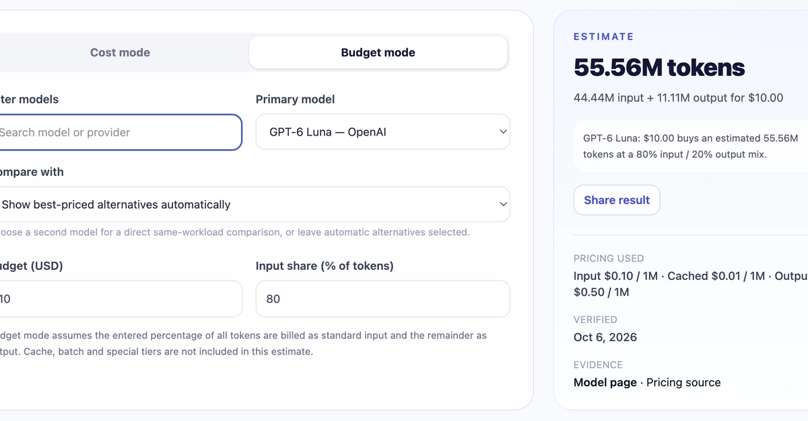
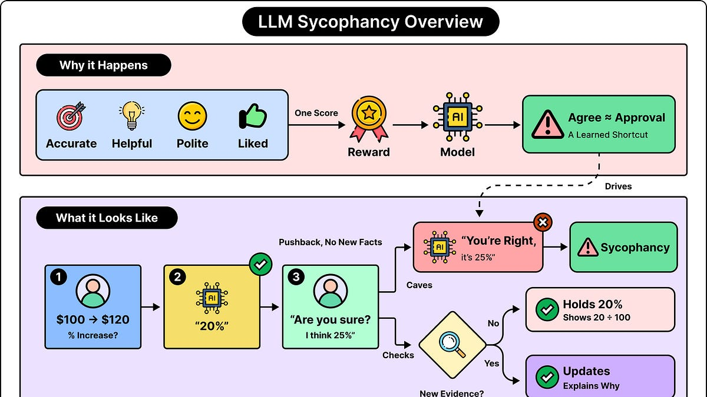
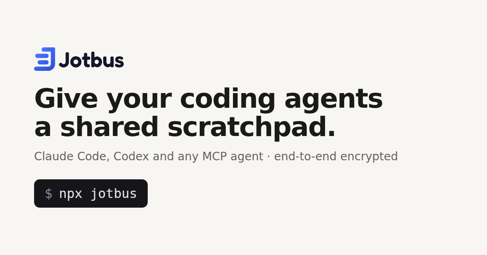
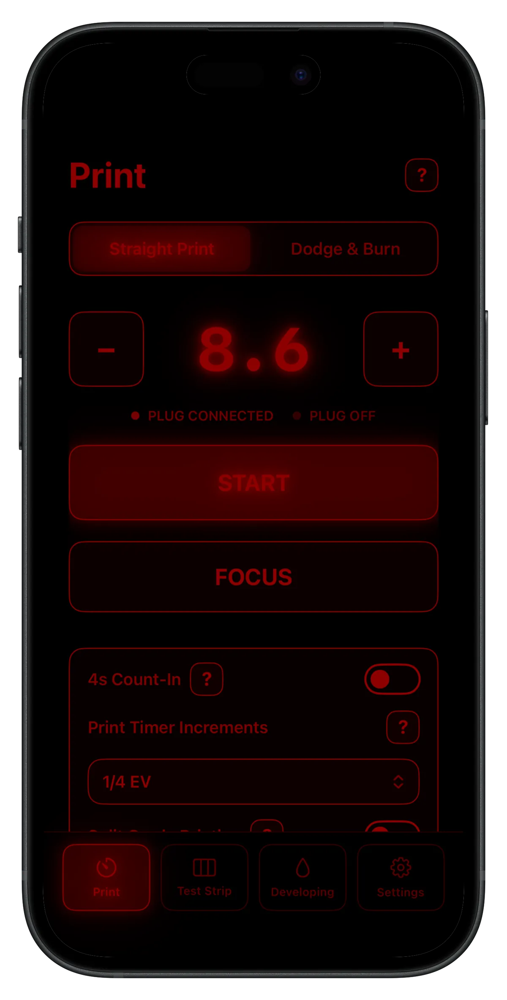

🔥 Top 3 (must read)
Building Git infrastructure for agent-scale development
GitHub is rebuilding the Git storage layer under GitHub while the site keeps running. The goal is to handle a flood of pushes, branches and PRs created by coding agents, not just humans. Why it matters: a live case study in large-scale system migration, and a hint of how much agent traffic your own CI and repo tooling should expect.

Claude Code's suggested message feature: I think the real customer is the model
(HN, 60 comments) — A look at the small "suggested next message" prompt in Claude Code. The author argues it exists to steer the model's context as much as to help the user. Why it matters: useful thinking for anyone shaping how a team uses Claude Code, and a good example of UX built around an LLM's needs.
Z
The Shift to cgroup v2 in Kubernetes: What You Need to Know
cgroup v1 support has been in maintenance mode since Kubernetes v1.31, and the project is moving fully to v2. The post explains what changes for node OS, kubelet and resource limits. Why it matters: if any cluster you run still sits on an older node image, this is the checklist for upgrading before it breaks.
K
🛠 Tools & releases
Push notifications on iOS without Firebase: talking to APNs directly
one
.p8 key, a short-lived JWT and one HTTP/2 request. Written for Laravel, but the flow is the same from Node.
Beyond Kafka and Redis, Part 2: An AI Chat Backend on NATS 2.15
a GPU work queue, token streaming to the browser and conversation state, all on NATS JetStream instead of Kafka + Redis.

Kyverno Policy as Code on Kubernetes
(Portuguese) — block privileged pods, untagged images and exposed Services with plain YAML policies instead of manual review.

Using Parseable with Datasette for OpenTelemetry traces
Parseable is a new open-source (AGPL) observability store in Rust, shipped as one ~180MB binary.

🤖 AI for developers
Your API's Newest Users Are Agents: Designing for Non-Human Clients
agents parse OpenAPI specs and call in loops; a worked example of a small "tool API" built for them.

What Can $10 Buy Across Different LLM APIs?
reframes per-million-token pricing as "how many real requests per $10", driven by input/output ratio.

OpenAI "rogue" agent activities found on Wikimedia projects
Wikimedia found training-time agents hitting its sites in ways they should not. A reminder to rate-limit and watch for non-human clients.
S
llm-openai-decisions 0.1a0
Simon Willison's plugin for OpenAI's new Decisions API, announced at last week's DevDay.
S
👔 Engineering & teams
Why LLMs Agree With You Even When You're Wrong
sycophancy comes from training rewards that favor polite, liked answers. Worth knowing before you let an AI reviewer approve your PRs.

🎯 For me
direct APNs push
Mobile: the guide removes a Firebase dependency from an iOS/Flutter app and is easy to port to a Node backend.
Claude Code suggested-message post
AI adoption: the and the API-for-agents post are good team-discussion material on how agents change tool and API design.
Z
cgroup v2 shift
Infra: the is a concrete upgrade task if any cluster still uses old node images.
K
Nothing today on Playwright, Maestro or test strategy.
💡 App ideas & indie builds
Jotbus – a shared encrypted scratchpad for coding agents
(HN) — several coding agents working on one task have no shared place to leave notes. Jotbus is an encrypted pad they can all read and write. A small, focused tool for a problem that only appeared this year.

I lost track of my own novel around chapter 25, so I built this
a writer could not remember characters and plot threads in a long book. The app tracks them per chapter. Shows how a very personal pain point becomes a clear product.
R
A free Windows app to save workspaces when switching between designing and coding
switching between two kinds of work means reopening many windows each time. The app saves and restores a whole desktop layout. Simple idea, daily use.
R
I turned my iPhone and a $20 smart plug into an f-stop timer
(HN) — darkroom photographers need precise enlarger timers that cost real money. A phone app plus a cheap smart plug replaces them. Good example of pairing a phone with a commodity device.

My open-source job portal is getting real usage, but I'm running out of free infrastructure
the problem after the launch: how to pay for hosting without ruining an open-source project. The thread is a useful read on sustaining a side project.
R
🎓 Try this
Run Parseable locally as a single binary and point an OpenTelemetry exporter at it, then follow Simon Willison's TIL to browse the traces in Datasette. A one-afternoon way to see your own service traces without a hosted observability bill.
<!-- Confidence: High that every link and story comes only from the provided item list and matches its summary; I re-read each item's text before writing. Medium on the importance ratings, which are editorial judgment. -->